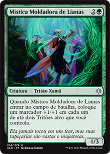
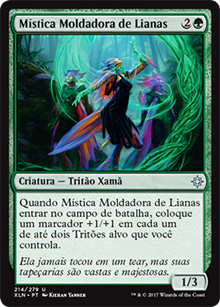
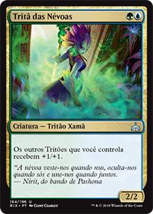
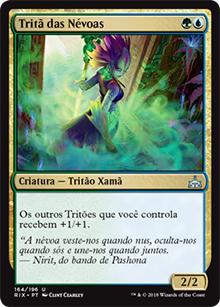

Os tritões de Ixalan são uma tribo com bastante variações, Full Aggro (Stomp ou Tokens), MidRange (+ Stamina para LateGame), Controle (O modo menos viável comparando com outros decks no MetaControl). Particulamente prefiro Aggro sem tokens, onde uso os próprios tritões para se buffarem. E essa é a ideia até mesmo no MODERN atual, achei interessante e resolvi tentar encaixar uma estratégia parecida.
 

Não temos mais a travessia de ilha que é usada no modern, mas para deixar as criaturas inbloqueáveis usamos cartas como Arauto dos Regatos Secretos, combando com Mímico Metálico, Elite de Raiz Profunda e outras possíveis mas que não estão na lista do meu deck após RIX, sendo algumas delas Mística Moldadora de Lianas, Campeão de Raiz Profunda, Portadora do Jade, Benção dos Arautos do Rio, Moldadores da Natureza dentre outras.

Devido a sua combinação de cor UG não se torna tão difícil deixar seu deck rápido para bater e "esperto" para se defender. Sabendo mesclar as mágicas entre ofensivas e defensivas se torna um deck no mínimo interessante. Sabendo montar/usar seu side você fica quase que sem ponto cego, afinal temos azul e seu famoso "ANULAR", counter melhor que esse!? Verde e azul também tem cartas interessantes que podem ajudar na sobrevivência de suas criaturas, habilidades como resistência a magia, +X/+X, retornar para a mão, etc.Além de tudo isso os tritões facilitam mais quando o assunto é bater sem se preocupar com bloqueio, pois cartas como Furtiva do Rio, Arauta do Manto de Bruma, buffados com Mímico Metálico, Elite de Raiz Profunda vão fazer seu oponente pensar do porque não ter removido enquanto eram apenas 1/1.
Mais uma vez, dependendo da ideia você pode ter um deck estilo Goblins em seu auge, quando ou matavamos no turno 4 ou morriamos no turno 5. Por ser um deck que precisa de criatura batendo constantemente minha ideia foi colocar o máximo de criaturas possíveis, mas não esquecendo das mágicas para ter respostas e suporte quando necessário. Mas é preciso ter mais de 22 criaturas no deck se você pensa em ser rápido, caso contrário seu deck ficará lento e não escala muito bem LateGame, a não ser que vc consiga deixar estas o máximo de tempo possível vivas. Mas se você guardar mana pra resposta, você não baixa criatura, mantenha em jogo uma quantidade de criaturas X+1, onde X é o número de criaturas em campo do seu oponente.
 

Queria deixar minha deck list, mas, melhor não! Não esqueçam de cartas como Kopala, Guardião das Ondas, Kumena, Tirano de Orazca e Tritã das Névoas que nem precisam serem mencionadas, tamanho sua grandeza e obrigatoriedade no STANDARD atual para esse tribal de sereios glamurozos.
Daniel Alves